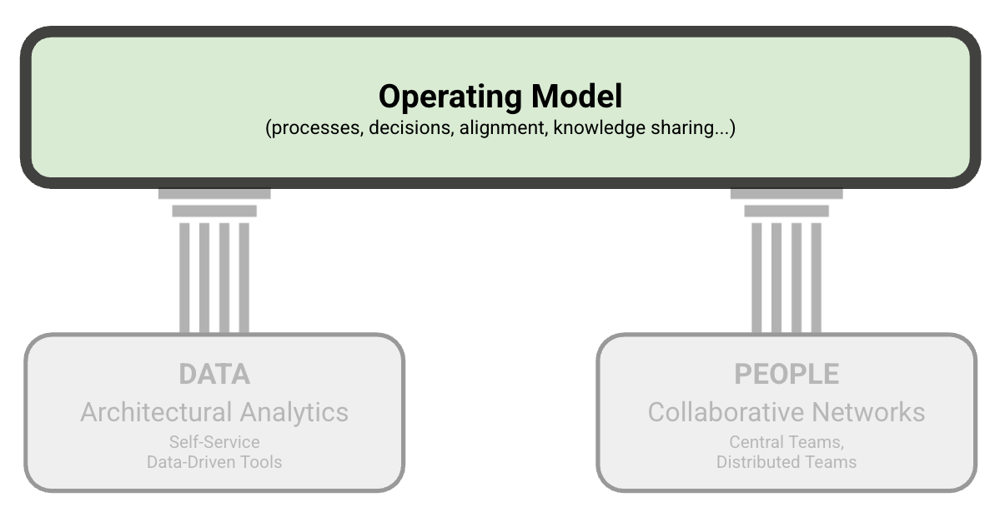

Operating Model: Introduction
IN THIS SECTION, YOU WILL: Get an overview of the Operating Model in the Grounded Architecture framework that provides a flexible, principle-driven structure for aligning architecture with business goals.
KEY POINTS:
- The Operating Model is a core part of the Grounded Architecture framework, guiding how architecture functions within an organization through principles, governance, and practices.
- It is designed to evolve with the organization while ensuring architectural activities remain aligned with business objectives.
- We introduce four main areas of the operating model: General Principles, Governance (Nudge, Taxation, Mandates), Transformation Support (in support of Grounded Architecture Goals), and Generative AI.
- The model’s success depends on robust data (Lightweight Architectural Analytics) and strong collaboration (Collaborative Networks), not just processes and structure.
In this section, we will explore the Operating Model, a crucial element of the Grounded Architecture framework (see Figure 1). The Operating Model offers a structured approach to how an architecture practice operates within an organization. It outlines the principles, governance structures, and operational practices that guide architects in their daily tasks.
Designed to be flexible and adaptive, the Operating Model evolves alongside the organization while consistently focusing on delivering value through architecture. It ensures that architectural efforts align with business goals and are effectively coordinated across teams and domains.
 Figure 1: The Grounded Architecture framework – Operating Model.
The Operating Model comprises four main areas:
-
General Principles
A set of guiding values and actionable principles to help architects operate effectively. These principles highlight the importance of utilizing data and networks to create meaningful, measurable impact across the organization. -
Nudge, Taxation, Mandates – Governance
A balanced approach to IT governance, blending three styles:- Nudging: Subtle guidance through defaults and visibility
- Taxation: Economic incentives to influence behavior
- Mandates: Clear rules and standards to ensure compliance
This flexible model allows organizations to strike a balance between innovation and consistency as well as autonomy and alignment.
-
Transforming with Grounded Architecture (in support of Grounded Architecture Goals) An examination of how Grounded Architecture facilitates meaningful organizational transformation, which includes:
- Executing at scale
- Enhancing data-driven decision-making
- Maximizing alignment and learning
- Increasing adaptability
-
Bonus: Leveraging Generative AI in Architecture
Practical methods for utilizing Generative AI as a tool for enhancement—automating routine tasks, improving collaboration, and accelerating analysis—while acknowledging the necessity of responsible use, human oversight, and strong governance.
While the Operating Model offers a wealth of structures and ideas, it is essential to emphasize one key point: no operating model functions in isolation.
Without healthy Lightweight Architectural Analytics (data) and strong Collaborative Networks (people), any operating model risks becoming an ivory tower—a set of well-meaning policies and opinions that are disconnected from the realities of daily work.
In summary: people and data come first—process comes second.
Grounded Architecture Framework: Operating Model |